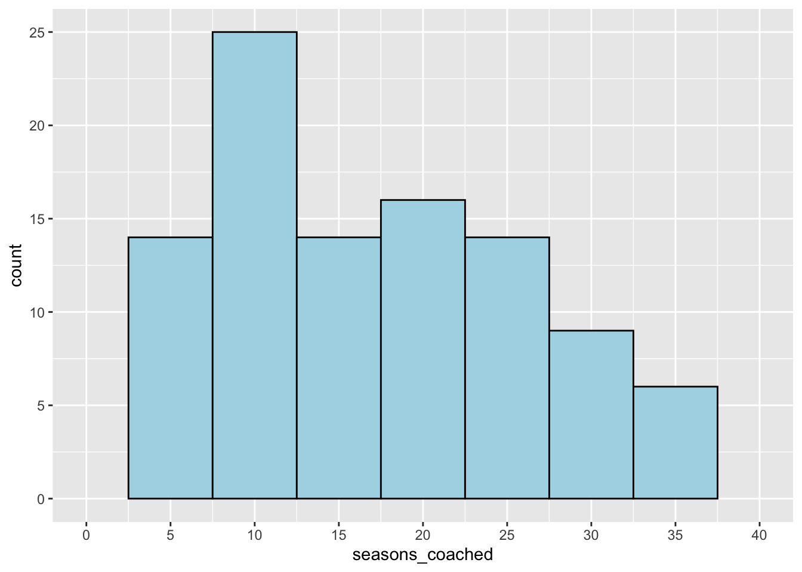
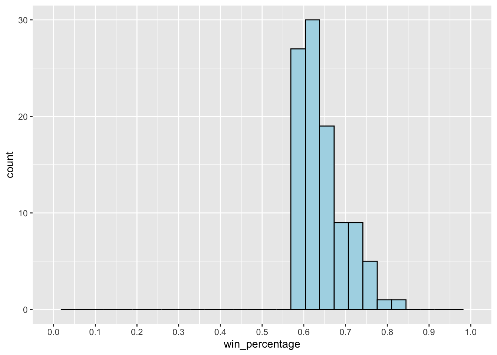
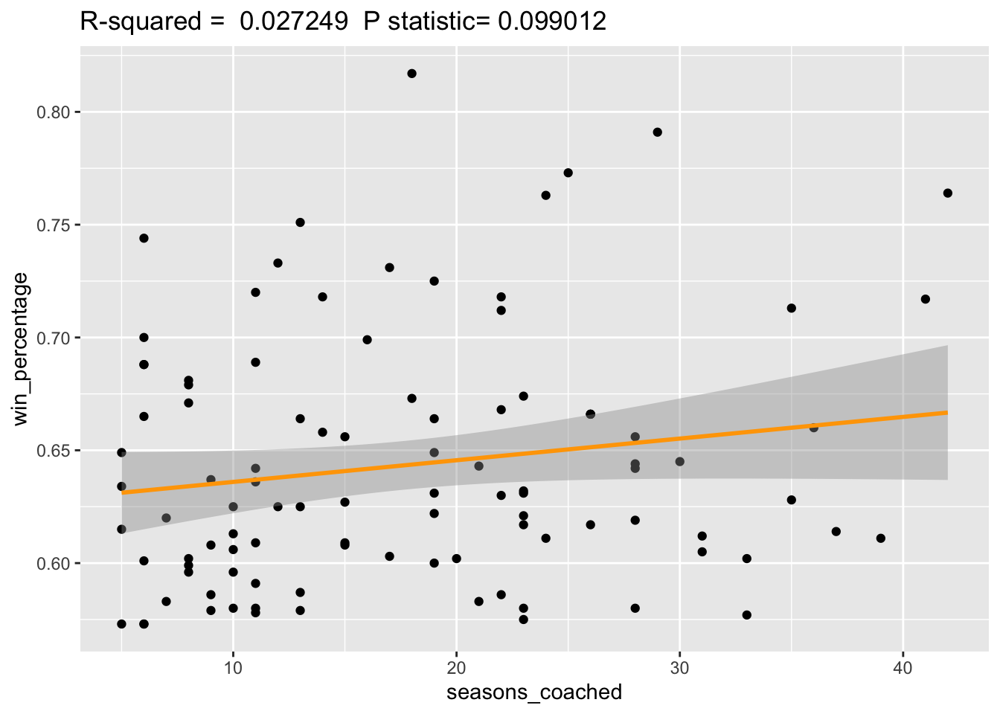
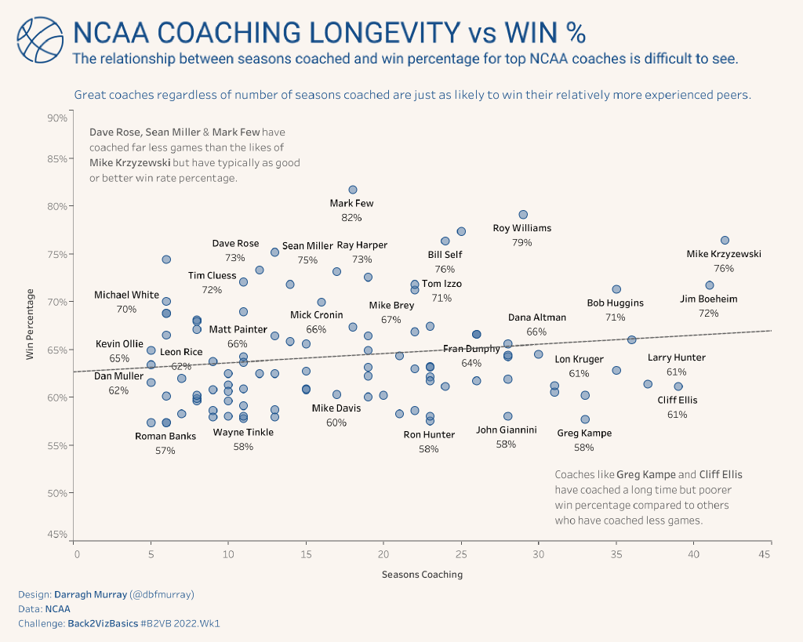

I kicked off the year participating in a brand-new data visualisation challenge curated by Eric Balash. It’s called ‘Back to Viz Basics’, also known by its hashtag #B2VB. It’s a fortnightly challenge where the data visualisation community - both new and old - come together to practice some core charting skills.
The first ‘official’ challenge was on the theme of the scatter plot, a chart type that’s a core communication tool of the data professional. Eric challenged us to analyse some American college basketball data, specifically on coaching, to sharpen our scatter plot skills. Given I was on holidays, I blasted out a chart analysing win percentage (%) versus coaching longevity (measured in seasons).
Over the next few days, I watched the #datafam community publish many beautiful scatterplots, often far more complex than the basic one I threw together. But it became increasingly clear that the challenge Eric posted required more in depth thought than perhaps he initially intended (or perhaps he did, Eric - let me know!).
Not only was this an exercise in building scatterplots, but it was also fundamentally an exercise in answering a specific problem using the basic tools of exploratory data analysis.
I’m going to briefly outline my process to answering the B2VB challenge showing why this is, and finish with a small sermon about why dual-use challenges like B2VB are excellent arenas for developing the key skills of the data professional. You’ll see some #rstats thrown in the mix as well.
The Analytics Problem
The task was to examine some NCAA basketball coaching data. Critically, Eric asked us:
“I’d like to understand if there is a relationship between ‘Season Coaching’ and ‘Overall Win Percentage.’”
This is what I usually refer to as the analytics problem. It’s the key question that drives both the data analysis and the output of the analysis - in this case, a scatter plot data visualisation.
The Importance of Exploratory Data Analysis
Getting an understanding of the data you’re working with is a crucial step to completing any analyses. There are many great commentaries on why this is, but I’ll just leave you with this quote from a great book on doing data science from Hadley Wickham and Garrett Grolemund which neatly sums up its importance:
“EDA is an important part of any data analysis, even if the questions are handed to you on a platter, because you always need to investigate the quality of your data. Data cleaning is just one application of EDA: you ask questions about whether your data meets your expectations or not. To do data cleaning, you’ll need to deploy all the tools of EDA: visualisation, transformation, and modelling.”
Variable selection
The dataset itself contains 101 observations of six variables:
- Coach (String representing the name of the NCAA coach)
- School (String representing the school the coach works at)
- Seasons Coaching (numeric representing the number of seasons the coach has participated in)
- Wins (numeric representing the number of victories the coach has had)
- Losses (numeric representing the number of defeats the coach has had)
- Win Percentage (numeric representing the percentage of total games the coach has won)
We don’t have a wide variety of variables to work with in this instance, and taking the analytics question into account, I decided to primarily work with Win Percentage and Seasons Coaching as they seemed the most relevant to the task at hand.
Interrogating the data
So, what do these variables actually look like? Let’s look at their distributions starting with Season’s Coaching.

We can immediately see that this variable is limited. All the coaches in the data have coached over five seasons. This is quite interesting because it gives rise to another question: where are all the coaches who coach less than five seasons? Do these limitations impact our approach to the analytics problem?
With that in mind, let’s turn our mind to the other key variable of interest: Win Percentage (%).

The plot further indicates the limitations of the data. All of the coaches in the dataset have > 50% win percentage - which is quite incredible. More key questions: Where are all the coaches who are not as successful? If 50% is the lower limit for being included in the dataset, could there be long-term coaches who have poor win percentages?
It’s clear that these limitations may impact our analysis - after all, how can one determine a meaningful relationship between coaching longevity when we seem to be missing data on coaches who perhaps were not quite successful enough to be included in the extract?
However, let’s crack on and model the relationship between the two variables of interest: Season’s Coached and Win Percentage.

Looking closer at the plot, we note a very very slight positive relationship between the two variables which, on face value, may indicate that the longer you coached college basketball the slightly higher your win percentage may be.
However, the relationship doesn’t really seem strong as we can clearly see that many coaches with relatively short careers have just as good a win percentage as those who have been coaching for a substantial amount of time.
Furthermore, two key summary statistics are of immediate concern - the R-squared value and the P-statistic.
R-squared, being the measure that shows how much of the variance for a dependent variable (in this case win%) that is explained by the independent variable (seasons coached). Typically, data modelers would ideally want this value as close to 1 as possible, but in this case, we see the value is extremely low at 0.027. This tells us that there is little relationship between these two variables.
The p-statistic is also high at 0.09. Typically, to have a statistically significant relationship, we want the p value <0.05 otherwise there is a case that the null hypothesis - that there is no relationship between seasons coached and win percentage - is a possibility.
Based on these two statistics, there is a good case for saying that we cannot say there is any meaningful relationship between seasons coached and win percentage.
Critical consideration
Thinking about the data critically, we shouldn’t be surprised that we can’t really derive a solid relationship between the two variables of interest. It makes a lot of sense that coaches who win a lot of games are likely to keep their jobs and coach for many seasons, whereas on the flip side, those who don’t perform well, would not keep their job.
And given the limitations we discovered in the dataset, we don’t see the underperformers and therefore its difficult to accurately measure the impact on the coaching longevity on winning percentage and vice versa.
Visualisation
Now with the analysis done, it was time to finish the visualisation - as usual I elected to finish in Tableau.

You can see the full interactive on Tableau Public.
Final Word
The objective of this fairly extravagantly long blog post was to demonstrate the usefulness of exploratory data analysis in the production of data products - particularly visualisations. Often its an iterative process of exploring specific questions (the analytics problems), diving deep into the available data (variable selection and data interrogation) and then placing the information uncovered in your analysis in the context (critical consideration).
Often many data professionals can do this rapidly without requiring writing up a 1000+ word essay of their process, but I wanted to detail my own basic framework to give those who may be starting out some idea of what it really takes to do data analysis and data visualisation.
Thanks again to Eric for B2VB which served as the launch pad for this blog post - B2VB is gonna be a great initiative.
If you want the R code used in doing the data exploration, I’ve made it available in a GitHub repo.